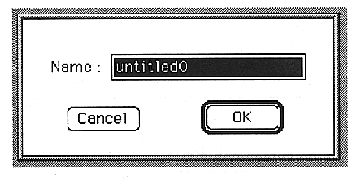

START
Set the start note.
You can set a value between 0 and 127.
Set which MIDI note this layer will play. The sound of this layer will be heard when a MIDI note comes between START and END.
END
Set the end note.
You can set a value between 0 and 127.
Set which MIDI note this layer will play. The sound of this layer will be heard when a MIDI note comes between START and END.
Direct Level
Set the direct send.
You can set a value between 0 and 7. 7 is the maximum output.
Effect Send
Sets the effect send.
You can set a value between 0 and 7. 7 is the maximum output.
Effect Select
Sets the effect input channel.
You can set a value between 0 and 15.
Direct PAN
Set the pan.
Values from R16 to C to L16 can be set.